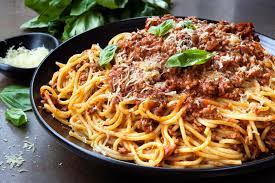

Spaghetti

Description
Spaghetti is a long, thin, solid, cylindrical pasta. It is a staple food of traditional Italian cuisine. Like other pasta, spaghetti is made of milled wheat and water and sometimes enriched with vitamins and minerals. Italian spaghetti is typically made from durum wheat semolina.
Ingredients
- 1 pound dry spaghetti
- 1/4 cup olive oil
- 1/4 cup butter
- 4 cloves garlic, minced
- 1/2 teaspoon red pepper flakes
- 1/2 cup chopped fresh parsley
- 1 cup grated Parmesan cheese
- 1 teaspoon salt, or to taste
- 1 teaspoon ground black pepper
Steps
- Bring a large pot of lightly salted water to a boil. Cook spaghetti in the boiling water, stirring occasionally until tender yet firm to the bite, about 12 minutes. Drain.
- Heat olive oil and butter in a large skillet over medium heat; cook and stir garlic and red pepper flakes until fragrant, 1 to 2 minutes. Stir parsley into garlic mixture. Mix spaghetti into garlic mixture and toss to coat. Stir Parmesan cheese, salt, and pepper into pasta mixture and remove skillet from heat.